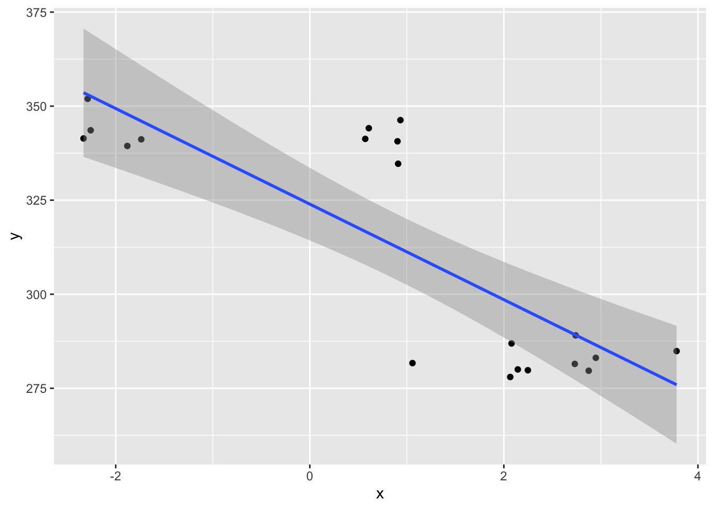

29 Mixed-design ANOVA
We have covered factorial ANOVA (one-way, two-way, etc.) and repeated measures ANOVA. A mixed-design ANOVA is what you get if some of your experimental factors are derived from independent samples (e.g., different subjects) and some are derived from repeated measures (i.e., the same subjects at different times). Mixed situations are very common, and are actually characteristic of nearly every set of real data we have used in this class to date. The good news is that there isn’t really a lot of work to do for us to learn to perform a mixed-design ANOVA. The maths involved are understandably more complex than what we have seen in the previous section but the basic logic and intuitions we have hopefully developed still holds.
We are still asking an omnibus question about differences in means
Differences in means still comes down to between-level variation being greater than within-level variation.
Repeated measures introduces the same familiar problem of non-independent observations between-levels, and is dealt with in a similar way to what we saw in the last lecture (i.e., “correcting” the denominator of the F-ratio).
With that, lets just dive into some practice.
Important notice about mixed-design ANOVA:
I will not ask you to compute the relevant sums of squares
by hand for a mixed design ANOVA, but you will need to know
how to use ezANOVA() to perform one.
29.1 Toy example
## subject level1 level2 score
## 1: 1 1 1 11.262954
## 2: 2 1 1 9.673767
## 3: 3 1 1 11.329799
## 4: 4 1 0 11.272429
## 5: 5 1 0 10.414641
## 6: 1 2 1 18.460050
## 7: 2 2 1 19.071433
## 8: 3 2 1 19.705280
## 9: 4 2 0 19.994233
## 10: 5 2 0 22.404653
## 11: 1 3 1 30.763593
## 12: 2 3 1 29.200991
## 13: 3 3 1 28.852343
## 14: 4 3 0 29.710538
## 15: 5 3 0 29.700785subject <- rep(1:5, 3)
level1 <- rep(1:3, each=5)
level2 <- rep(c(1, 1, 1, 0, 0), 3)
score <- c(11.262954, 9.673767, 11.329799, 11.272429, 10.414641,
18.460050, 19.071433, 19.705280, 19.994233, 22.404653,
30.763593, 29.200991, 28.852343, 29.710538, 29.700785 )
d <- data.table(subject, level1, level2, score)
# Be sure to diagnose what factors are repeated
# (within-subject) and which are between-subject.
# same subjects present at each level of level1
# level 1 is a within-subjects factor
d[, unique(subject), .(level1)]## level1 V1
## 1: 1 1
## 2: 1 2
## 3: 1 3
## 4: 1 4
## 5: 1 5
## 6: 2 1
## 7: 2 2
## 8: 2 3
## 9: 2 4
## 10: 2 5
## 11: 3 1
## 12: 3 2
## 13: 3 3
## 14: 3 4
## 15: 3 5# different subjects present in different levels of level 2
# level 2 is a between-subjects factor
d[, unique(subject), .(level2)]## level2 V1
## 1: 1 1
## 2: 1 2
## 3: 1 3
## 4: 0 4
## 5: 0 5## Differences between means of level1 and level2 main
## effects or interaction?
d[, subject := factor(subject)]
d[, level1 := factor(level1)]
d[, level2 := factor(level2)]
ezANOVA(
data=d,
dv=score,
wid=subject,
within=.(level1),
between=.(level2),
type=3
)## Warning: Data is unbalanced (unequal N per group). Make sure you specified a
## well-considered value for the type argument to ezANOVA().## $ANOVA
## Effect DFn DFd F p p<.05 ges
## 2 level2 1 3 4.067233 1.370875e-01 0.2129728
## 3 level1 2 6 406.004382 3.946207e-07 * 0.9908527
## 4 level2:level1 2 6 1.563131 2.841678e-01 0.2943058
##
## $`Mauchly's Test for Sphericity`
## Effect W p p<.05
## 3 level1 0.7245834 0.7245834
## 4 level2:level1 0.7245834 0.7245834
##
## $`Sphericity Corrections`
## Effect GGe p[GG] p[GG]<.05 HFe p[HF]
## 3 level1 0.7840576 6.479112e-06 * 1.491901 3.946207e-07
## 4 level2:level1 0.7840576 2.920523e-01 1.491901 2.841678e-01
## p[HF]<.05
## 3 *
## 429.2 Real data
## important libraries
library(data.table)
library(ggplot2)
library(ez)
## clean slate
rm(list=ls())
d <- fread('https://crossley.github.io/book_stats/data/mis/mis_data.csv')
## We will answer this question:
## Are there significant differences in the mean error per
## subject across phases and between groups?
## First, fix the annoying bug that different subjects in
## different groups have the same number.
d[group==1, subject := subject+10]
## compute mean error per subject per group
dd <- d[order(subject, phase), mean(error, na.rm=TRUE), .(subject, phase, group)]
## It's important to code factors as factors
dd[, subject := factor(subject)]
dd[, phase := factor(phase)]
dd[, group := factor(group)]
ggplot(dd, aes(group, V1, colour=phase)) +
geom_boxplot()
## Do it with ezANOVA()
ezANOVA(
data=dd,
dv=V1,
wid=subject,
within=.(phase),
between=.(group),
type=3
)## $ANOVA
## Effect DFn DFd F p p<.05 ges
## 2 group 1 18 45.30549 2.612929e-06 * 0.4729081
## 3 phase 2 36 269.80842 2.143099e-22 * 0.9060701
## 4 group:phase 2 36 23.62868 2.791502e-07 * 0.4579289
##
## $`Mauchly's Test for Sphericity`
## Effect W p p<.05
## 3 phase 0.01665791 7.651975e-16 *
## 4 group:phase 0.01665791 7.651975e-16 *
##
## $`Sphericity Corrections`
## Effect GGe p[GG] p[GG]<.05 HFe p[HF] p[HF]<.05
## 3 phase 0.5041995 2.296727e-12 * 0.504943 2.218260e-12 *
## 4 group:phase 0.5041995 1.192202e-04 * 0.504943 1.181316e-04 *